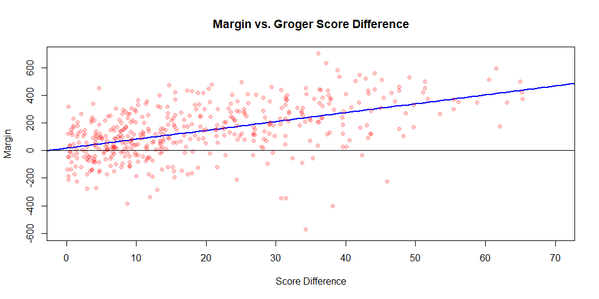

This page isn't complete yet, so check back later for more!
While quizbowl rankings have been done before, to my knowledge there's been no attempt to translate those rankings into actual forecasts, whether that be the probability of winning or the expected margin of victory. There's clearly a difference between a 60% and a 90% chance of victory, but a ranking alone doesn't really mark out where they occur. This analysis seeks to answer the question: what do the Groger Scores mean, anyway?
As data, I took the most recent Groger Ranks as well as the "scoreboard" tab of stat reports from as many tournaments in the database as possible. Then, games between two teams with a Groger Score (including pseudonymous teams) were filtered out, and the difference in Groger Score as well as whether the higher-ranked team won was recorded. Finally, a logistic regression was run on the points to get an estimate of the chance of victory given the difference between two teams' Groger Scores.

In addition, the margin of victory (or loss) that the higher-ranked team achieved was also recorded for each game, making a linear regression on the data possible.
There was a moderate correlation between Groger Score difference and expected margin of victory, though the spread is fairly wide. It makes sense that there would be a fair amount variation in outcomes, though; teams with the same Groger Score can match up better or worse against their opponents, and teams themselves can have fairly high packet-dependency.
These models are far from perfect, especially with only a couple hundred data points in so far, so what's in store for the future? If you have any suggestions, send them my way!